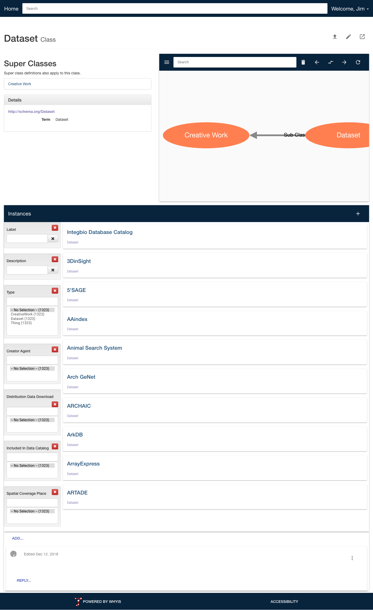

Creating Your First Whyis Knowledge Graph
Jim McCusker, RPI IDEA and Tetherless World Constellation
Follow along at:
Preliminaries
To follow this tutorial, please start by installing Whyis onto a virtual or physical machine of your choice.
Connect to your Whyis VM
To peform the following administrative tasks, you need to connect to the VM (if you’re not running directly):
$ vagrant ssh
Use screen for virtual terminals
$ screen -R -DD
- Create a new virtual terminal using
C-a c - Switch between virtual terminals using
C-a a
Make a terminal with your Whyis user
Once you are in the server, you need to change to the whyis user, go to the whyis app directory:
# Create a virtual terminal with C-a c
$ sudo su - whyis
$ cd /apps/whyis
Update your Whyis code and select branch
$ git pull
$ git checkout master
$ pip install --upgrade -r requirements/dev.txt
Objectives
- Create a custom Whyis knowledge graph for dataset search.
- Integrate knowledge from the Integbio for compatibility with Google Dataset Search.
- Add a simple ontology for datasets to improve the instance editor and faceted browser.
- Customize the front page to show a faceted browser of datasets.
- Create a custom view to show a relevant details on datasets.
- Create an inference agent to map dataset keywords onto DBpedia entries.
- Map metadata from PubMed XML files into Whyis and SETL PubMed Entries into the knowledge graph.
Generate a Whyis knowledge graph App
$ python manage.py configure
project_name [My Knowledge Graph]: Dataset Catalog
project_short_description []: A catalog of interesting datasets.
project_slug [dataset_catalog]:
location [/apps/dataset_catalog]:
author []:
email []:
linked_data_prefix [http://localhost]: http://datasets.example.com
version [0.1]:
packages []:
SECRET_KEY []:
SECURITY_PASSWORD_SALT []:
$
Install the App
$ cd /apps/dataset_catalog
$ pip install -e .
Restart Services
In your first terminal (cycle through using C-a a:
$ sudo service apache2 restart
$ sudo service celeryd restart
Create an Administrative User
In your whyis user terminal (cycle through using C-a a:
$ python manage.py createuser -e [email] -p [password] -f [First Name] \
-l [Last Name] -u [user handle] --roles=admin
Start the development server
$ python manage.py runserver -h 0.0.0.0
Could not configure logger, using defaults.
* Serving Flask app "dataset_catalog" (lazy loading)
* Environment: production
WARNING: Do not use the development server in a production environment.
Use a production WSGI server instead.
* Debug mode: on
* Running on http://0.0.0.0:5000/ (Press CTRL+C to quit)
* Restarting with stat
Could not configure logger, using defaults.
* Debugger is active!
* Debugger PIN: XXX-XXX-XXX
Visit the main page and log in
Default vagrant configuration URL: http://192.168.33.36:5000

Visit the main page

Integrate knowledge
- Download this SETL template and save it to
/apps/dataset_catalog/setl/integbio.setl.ttl. - Add fields to the template: keywords, distributions, description, references, similar datasets, URL.
- Follow the JSON-LD schema in the Google Dataset Search
- Test locally using setlr:
$ setlr ../dataset_catalog/setl/integbio.setl.ttl
Integrate knowledge (cont.)
- Comment out all the statements about
- Load into Whyis using
python manage.py load:$ python manage.py load -i ../dataset_catalog/setl/integbio.setl.ttl -f turtle - Watch the SETL process in celery (as admin user):
$ sudo tail -f /var/log/celery/w1.log - Correct any problems and re-load, adding the "Published [URI]" URI from the command line as the URI to revise:
$ python manage.py load -i ../dataset_catalog/setl/integbio.setl.ttl -f turtle -r [URI]
Add a simple ontology
- Download this Schema.org-based dataset ontology and save it to
/apps/dataset_catalog/dataset_ontology.owl. - Load into Whyis using
python manage.py load:$ python manage.py load \ -i ../dataset_catalog/dataset_ontology.owl -f xml - Search for 'dataset' and select.
Customize the front page
- Copy the default home page to your project:
$ cp /apps/whyis/templates/home_view.html /apps/dataset_catalog/templates/ - Replace the
{% content %}block with this:add
Create a custom view
- Download dataset_view.html to /apps/dataset_catalog/templates.
- Add the following to /apps/dataset_catalog/vocab.ttl:
<http://schema.org/Dataset> a owl:Class; whyis:hasView "dataset_view.html".
Create an inference agent
We can use dbpedia.org/sparql and the following query to resolve keywords to dc:subject values.
select distinct ?s ?o ?sc ?score where {
?s rdfs:label ?o .
?o bif:contains 'Protein'
OPTION (score ?sc) .
FILTER (lang(?o) = 'en')
filter (regex(str(?s), "http://dbpedia.org/resource"))
bind (?sc/ strlen(?o) as ?score)
} order by desc(?score) LIMIT 1
Map metadata
- Create a file importer for the PubMed XML.
- Add file and publication references to integbio.setl.ttl
- Add a SETL script to process PubMed XML files.
Create a file importer
Add the following to the config.py 'namespaces' entry:
importer.FileImporter(
prefix = LOD_PREFIX+'/pubmed/file/',
url = 'https://www.ncbi.nlm.nih.gov/pubmed/%s?report=xml'
),
Modify integbio.setl.ttl
Add the following as a predicate of the dataset object:
"dc:references" : [
"@for" : "pmid in row['Reference(s) - PubMed ID'].split('||')",
"@do" : {
"@id" : "https://www.ncbi.nlm.nih.gov/pubmed/{{pmid}}",
"@type" : [ "dcterms:BibliographicResource","bibo:AcademicArticle"],
"rdfs:seeAlso" : {
"@id" : "https://www.ncbi.nlm.nih.gov/pubmed/{{pmid}}",
"@type" : "http://datasets.example.com/PubMedXMLMetadataFile"
}
}
]
Add a PubMed SETL script
Download, customize/expand, and add the pubmed_xml.setl.ttl file.
$ python manage.py load -i ../dataset_catalog/setl/pubmed_xml.setl.ttl -f turtle
Additional metadata for PubMed Articles will now be included. Try adding more metadata from the XML, or adding an article view.